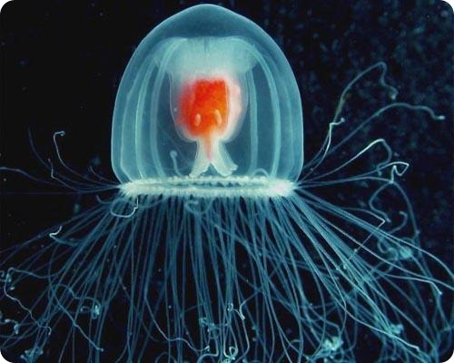
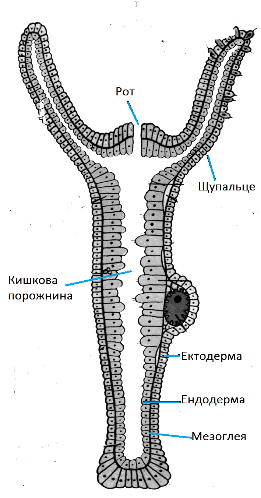
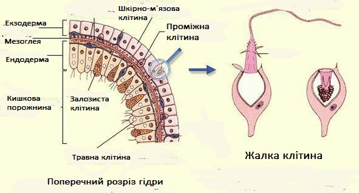

Тип Кнідарії(кишковопорожнинні)(будова)
Кнідарії (Жалкі) — тип тварин, що об'єднує близько 9 000 видів, які мешкають у водних, переважно морських середовищах. До цього типу належать медузи, гідри, поліпи та ін. Тіло кнідарій має мішкоподібну форму тіла, утворене двома шарами клітин - ектодермою і ендодермою, між якими залягає безструктурна, наповнена водою речовина - мезоглея. Зовнішній шар - ектодерма включає у себе шкірно- м'язові клітини, які забезпечують рух тварини, захист і зв' язок з навколишнім середовищем, проміжні клітини, які шляхом свого ділення забезпечують ріст та особливі жалкі клітини (кнідоцити). Кнідоцити використовуються кнідаріями для полювання на здобич та захисту від ворогів. Жалкі клітини мають чутливий волосок, який фіксує подразнення. Усередині кнідоцитів знаходиться спеціальний мішечок - нематоциста, у якому міститься спеціальна нитка. Здебільшого ця нитка є загостреною, липкою, може містити отруту. Подразнення, яке надходить із зовнішнього світу фіксується чутливим волоском клітини, подразнення передається і з нематоцисти викидається нитка. Жалкі клітини виконують дуже важливу роль, адже вони і захищають тварину, і допомагають їй у полюванні. Внутрішня тканина — ентодерма (гастродерміс), вистилає кишкову порожнину. Ендодерма складається з травних клітин, які беруть участь у травленні та залозистих клітин, які секретують травні ферменти у кишкову порожнину. 

Зовнішня і внутрішня будова гідри прісноводної - представника типу Кнідарії